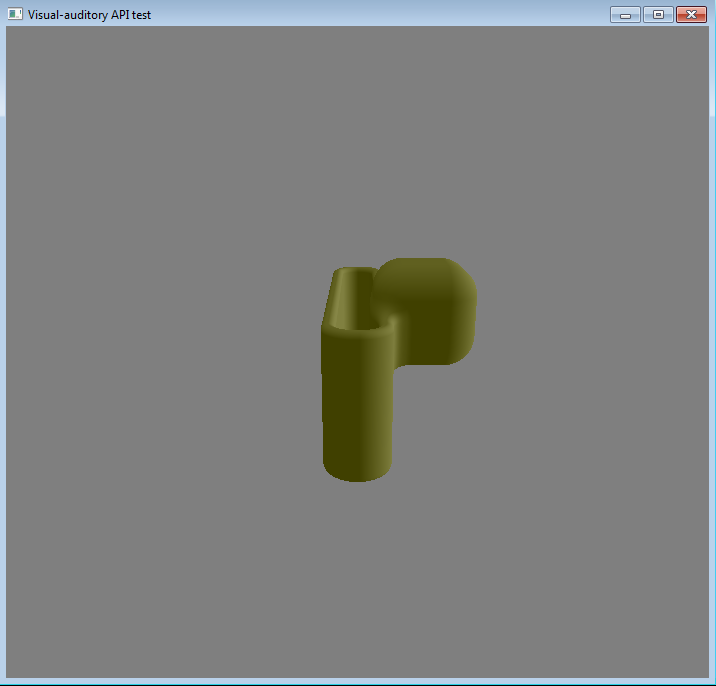

An h1 header
Below is simple program, creating SDF box primitive. For syntacsis comparison with simple VTK primitive creation look wiki:
#include "optixWindow.h"
#include "optixSDFPrimitives.h"
int main(int argc, char *argv[])
{
int windowWidth = 512;
int windowHeight = 512;
PinholeCamera pinholeCamera; //creates basic camera
contextManager m;
m.Update();//creates context
optixRenderer ren;
ren.SetValid(m.GetValid());
ren.SetContext(m.GetOutput());//m returns the context
ren.SetOpticalDims(windowWidth, windowWidth);
ren.SetCamera(&pinholeCamera);
//set not dynamic
ren.SetDynamic(false);
ren.SetAuditory(false);
//window procedure
GLFW_Window optixWindowProc;
optixWindowProc.SetDim(windowWidth, windowHeight);
optixWindowProc.SetRenderer(&ren);
optixWindowProc.SetContext(m.GetOutput());
optixWindowProc.SetCamera(&pinholeCamera);
RenderWindowInteractor iren; //TODO always check that basic still works
iren.SetWindow(&optixWindowProc);
std::cout << "DONE WITH WINDOW" << std::endl;
if (iren.SetUp()) //update of WindowProc is successful, we can start scene creation with predefined rendering parameters
{
std::cout << "START MAIN LOOP" << std::endl;
//Scene creation
try
{
optixSDFBox sdf;
sdf.SetContext(m.GetOutput());
sdf.SetCenter1(optix::make_float3(0));
sdf.SetDims(optix::make_float3(0.3,1.0,3.0));
sdf.Update();
std::cout << "BOX created" << std::endl;
SDFMaterial mSdf;
mSdf.SetContext(m.GetOutput());
mSdf.Update();
std::cout << "MATERIAL created" << std::endl;
optixMapper map21;
map21.SetContext(m.GetOutput());
map21.SetInput(sdf.GetOutput());
map21.AddMaterial(mSdf.GetOutput(), mSdf.GetType());
map21.Update();
optixSdfActor acSdf1;
acSdf1.SetContext(m.GetOutput());
acSdf1.AddMapper(&map21);
acSdf1.Update();
ren.AddActor(&acSdf1);
}
catch (optix::Exception& e)
{
std::cerr << e.getErrorString() << std::endl;
}
std::cout << "DONE WITH SCENE" << std::endl;
//Main loop
iren.Start();
std::cout << "MAIN LOOP STARTED" << std::endl;
}
return 0;
}
The output of the program is:

Rendered SDF box
A more complex example is below:
#include "optixWindow.h"
#include "optixSDFPrimitives.h"
#include "optixSDFOperations.h"
int main(int argc, char *argv[])
{
int windowWidth = 512;
int windowHeight = 512;
PinholeCamera pinholeCamera; //creates basic camera
contextManager m;
m.Update();//creates context
optixRenderer ren;
ren.SetValid(m.GetValid());
ren.SetContext(m.GetOutput());
ren.SetOpticalDims(windowWidth, windowWidth);
ren.SetCamera(&pinholeCamera);
//set not dynamic
ren.SetDynamic(false);
ren.SetAuditory(false);
//window procedure
GLFW_Window optixWindowProc;
optixWindowProc.SetDim(windowWidth, windowHeight);
optixWindowProc.SetRenderer(&ren);
optixWindowProc.SetContext(m.GetOutput()); //returns context
optixWindowProc.SetCamera(&pinholeCamera);
RenderWindowInteractor iren; //TODO always check that basic still works
iren.SetWindow(&optixWindowProc);
std::cout << "DONE WITH WINDOW" << std::endl;
if (iren.SetUp()) //update of WindowProc
{
std::cout << "START MAIN LOOP" << std::endl;
//Scene creation
try
{
optixSDFBox sdf;
sdf.SetContext(m.GetOutput());
sdf.SetCenter1(optix::make_float3(1.0));
sdf.SetDims(optix::make_float3(0.3));
sdf.Update();
const int nums = 10;
SDFRoundingOp round[nums];
round[0].SetContext(m.GetOutput());
round[0].AddOpperand(&sdf);
round[0].SetKoeff(0.01);
round[0].Update();
for (int i = 1; i < nums; i++)
{
round[i].SetContext(m.GetOutput());
round[i].AddOpperand(round[i - 1].GetOutputSdfObject());// &sdf);
round[i].SetKoeff(0.01*i);
round[i].Update();
}
optixSDFTorus sdfT;
sdfT.SetContext(m.GetOutput());
sdfT.SetCenter1(optix::make_float3(0.0));
sdfT.SetRadius1(optix::make_float2(0.4, 0.1));
sdfT.Update();
SDFElongateOp el;
el.SetContext(m.GetOutput());
el.AddOpperand(&sdfT);
el.SetHKoeff(optix::make_float3(0.0, 1.0, 2.1));
el.Update();
SDFBlendUnionOp opBlend;
opBlend.SetContext(m.GetOutput());
opBlend.AddOpperand1(&sdf);
opBlend.AddOpperand2(el.GetOutputSdfObject());
opBlend.SetKoeff(0.3);
opBlend.Update();
SDFMaterial mSdf;
mSdf.SetContext(m.GetOutput());
mSdf.Update();
optixMapper map21;
map21.SetContext(m.GetOutput());
map21.SetInput(sdf.GetOutput());
map21.AddMaterial(mSdf.GetOutput(), mSdf.GetType());
map21.Update();
optixSdfActor acSdf1;
acSdf1.SetContext(m.GetOutput());
acSdf1.AddMapper(&map21);
acSdf1.Update();
ren.AddActor(&acSdf1);
}
catch (optix::Exception& e)
{
std::cerr << e.getErrorString() << std::endl;
}
std::cout << "DONE WITH SCENE" << std::endl;
//Main loop
iren.Start();
std::cout << "MAIN LOOP STARTED" << std::endl;
}
return 0;
}
The output of the program is :

Rendered FRep modelled geometry